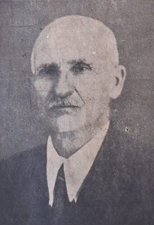
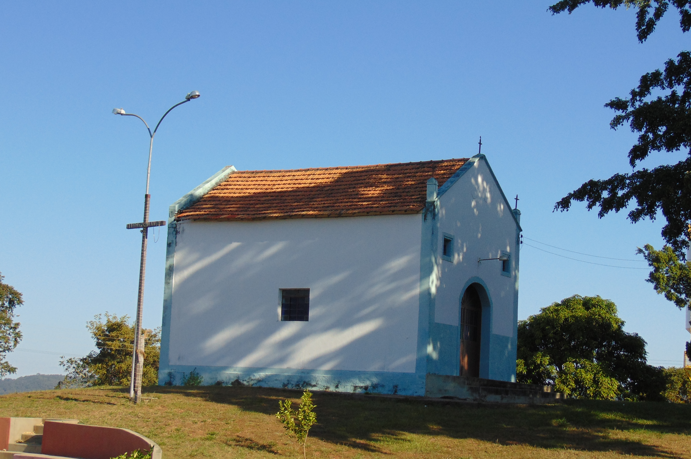

O Início do Processo de Formação de Anhanguera - Página de Teste
Não é de conhecimento da população anhanguerina a existência de documentos ou outros tipos de fontes históricas que narrem com exatidão o início da formação do atual município de Anhanguera, estado de Goiás. As informações oficiais e mais detalhadas tratam apenas do período no qual o sr. Belchior de Godoy (Figura 1) adquiriu as terras onde se localiza o atual centro de Anhanguera. Em tal época, no ano de 1935, nossas terras estavam sob a condição de distrito de Goiandira-GO e tinham como proprietário o sr. Onofre Ferreira, que não permitia a formação de grupos populacionais em suas terras.

Em período anterior à compra de terras que possibilitou a formação da cidade de Anhanguera, é conhecida a existência de um povoado, formado nas terras próximas a onde foi construída a Capela Nossa Senhora Aparecida, conhecido hoje como “Anhanguera velha”.

Durante o loteamento das terras adquiridas por Belchior de Godoy, tal povoado já se tratava de uma localidade consolidada, com moradias, escola e comércio, no qual se destacou a antiga Charqueada Santa Cecília.O que não se sabe é o período no qual tal localidade foi fundada. São duas as hipóteses que considero: o povoado conhecido como Anhanguera velha teria surgido após o ano de 1913, com o início das atividades da ferrovia, ou teria surgimento anterior à ferrovia, o que até o momento parece menos provável mas não deixa de ser uma hipótese a considerar.

Na primeira hipótese, ao tomarem conhecimento da chegada da ferrovia, moradores das regiões vizinhas a Catalão-GO e Araguari-MG teriam viajado para locais próximos à Estação Anhanguera, entre os anos de 1913 e 1920. Com as proibições enfrentadas para construírem lares próximos à estação, os novos moradores foram obrigados a se fixarem no local onde se formou o povoado de Anhanguera velha e permaneceram lá, exclusivamente, até por volta de 1935.

Na segunda hipótese, antes da chegada da ferrovia já existiam pessoas habitando a região do atual município de Anhanguera e também do antigo povoado de mesmo nome. Talvez a localidade não contasse com uma organização social característica de uma cidade mas sim uma área rural, que se iniciou à partir do forte comércio de arroz no sudeste goiano.